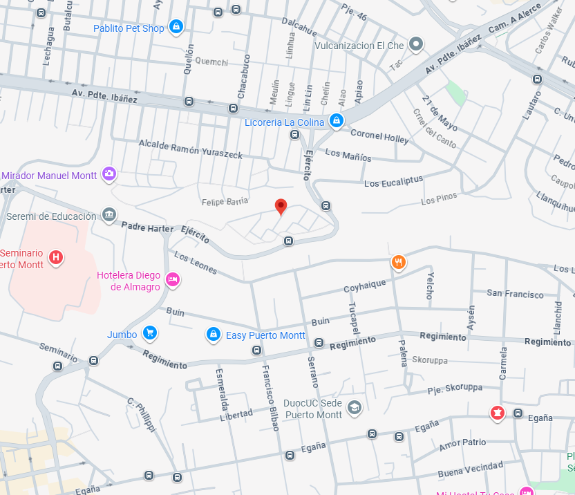

¿Que es Pets?
Pets es una empresa dedicada a la venta de articulos de mascotas, alimentos y articulos de salud.
La empresa se fundo en el año 2021 y actualmente tenemos una tienda disponible en el pais,
esperamos a futuro expandirlos por todas la regiones de Chile.
¿Donde nos ubicamos?
Actualmente estamos en el corazón de Puerto Montt, calle germania

Productos disponibles
Comida premium do cahorros